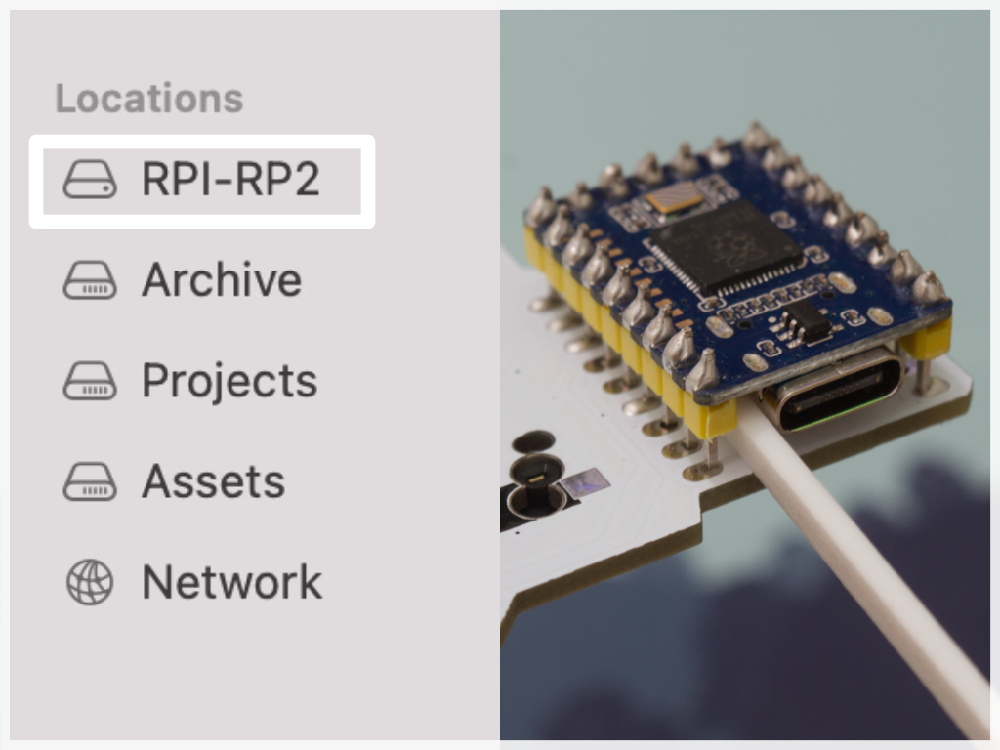

Firmware
Latest precompiled Vial firmware can be found here. Both MCU's uses same firmware file.
If the RP2040 Zero MCU does not have the correct firmware, hold down the BOOT button on the MCU and connect it to the computer. MCU should appear as a USB drive, drag and drop the uf2-file to it.
If the MCU already has the firmware, you can quickly press the reset button twice. It will then appear as a USB drive. The button on the right side of the MCU can be pressed with a non-metallic stick.
In the STL folder there is a file for a small tool that you can 3D print.
Differences between QMK and Vial firmware
Vial firmware is practically the same as QMK but with more features. Vial allows you to use the Vial GUI software to customise the keyboard layout.
If you want to modify the QMK firmware, you need to install the QMK environment first. This is why I recommend Vial firmware for beginners.
If you update the Vial firmware, the layout changes may be lost. Take a backup before updating using desktop sofware.You can find fork of Vial here.